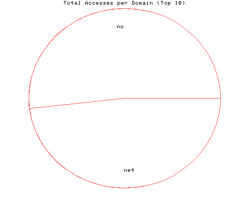
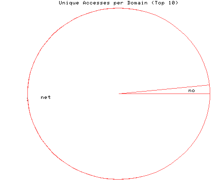

HTTP Server Domain Statistics
Covers: 10/23/95 to 10/27/95 (5 days).
All dates are in local time.
1 level, sorted by number of requests, 2 unique domains.
26289 : 2 : 10/27/95 : Norway (.no) 24403 : 120 : 10/27/95 : Network (.net)

Statistics generated at Fri Oct 27 08:33:47 MET 1995, (C) Oslonett AS, 1995.